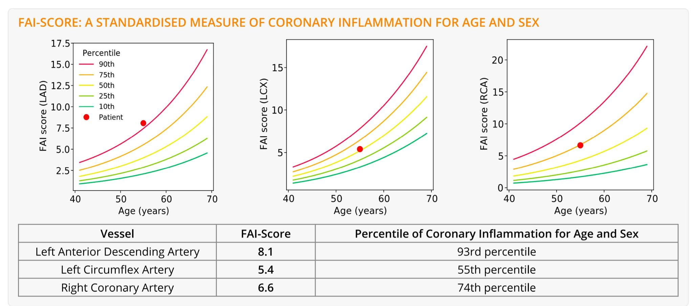

CaRi-Heart AI on CT angiograms measures coronary inflammation missed by hs-CRP
The poster describes CaRi-Heart, an AI analysis of standard CT angiograms that estimates coronary inflammation through the Fat Attenuation Index and says no blood test captures this. A shared case had minimal stenosis after lipid lowering but a high FAI score of 8.1 despite an hs-CRP of 0.15 mg/L.